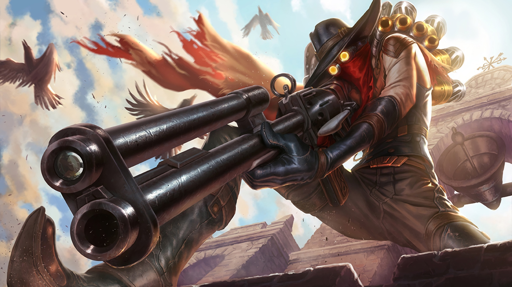

About me
Jhin is a meticulous criminal psychopath who believes murder is art. Once an Ionian prisoner, but freed by shadowy elements within Ionia's ruling council, the serial killer now works as their cabal's assassin. Using his Whisper.png gun as his paintbrush, Jhin creates works of artistic brutality, horrifying victims and onlookers. He gains a cruel pleasure from putting on his gruesome theater, making him the ideal choice to send the most powerful of messages: terror.
Hobbies
Art
Beauty
Collection
Traveling